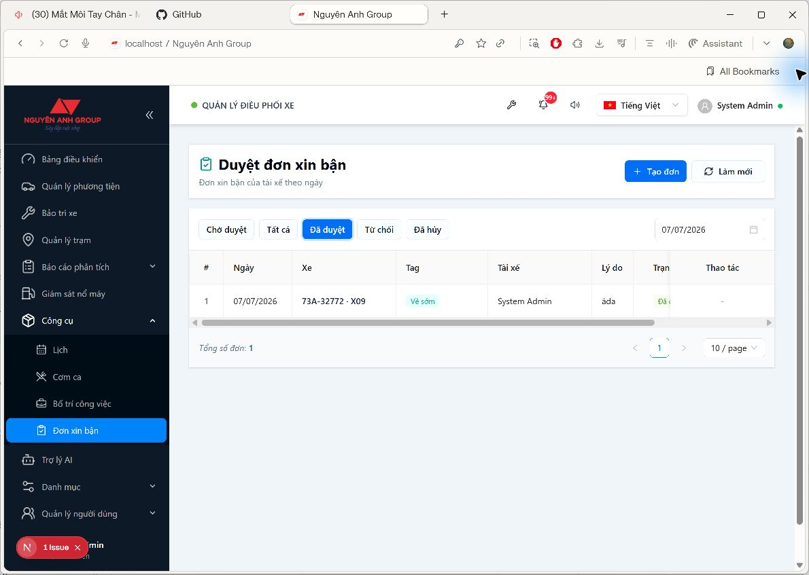

Ảnh chụp trang đang sử dụng
Trang: Duyệt đơn xin bận
Bấm Tạo đơn để gửi yêu cầu mới
Lọc theo trạng thái hoặc ngày
1. Mở trang Đơn xin bận
-
1
Vào nhóm Công cụ
Trên thanh menu bên trái, mở nhóm Công cụ.
-
2
Chọn Đơn xin bận
Nhấn mục Đơn xin bận để mở danh sách đơn theo ngày làm việc.
2. Tạo đơn mới
-
1
Bấm Tạo đơn
Nút Tạo đơn nằm ở phần đầu trang, bên phải tiêu đề.
-
2
Nhập thông tin
Chọn ngày, xe, tag phù hợp và nhập lý do xin bận.
-
3
Gửi đơn
Sau khi kiểm tra thông tin, bấm Gửi đơn. Đơn mới sẽ vào trạng thái Chờ duyệt.
3. Theo dõi trạng thái
| Tab | Ý nghĩa |
|---|---|
| Chờ duyệt | Các đơn mới gửi, đang chờ người phụ trách xử lý. |
| Đã duyệt | Các đơn đã được chấp thuận và áp dụng vào bố trí/xếp lốt. |
| Từ chối | Các đơn không được chấp thuận, thường có ghi chú lý do. |
| Đã hủy | Các đơn do người gửi hoặc người phụ trách hủy trước khi xử lý. |
Có thể dùng bộ chọn ngày để xem đơn đúng ngày làm việc cần kiểm tra.
4. Duyệt, từ chối hoặc hủy đơn
-
1
Duyệt đơn
Khi duyệt, hệ thống ghi nhận tag của xe cho ngày làm việc tương ứng.
-
2
Từ chối đơn
Nhập lý do từ chối để người gửi biết vì sao đơn không được chấp thuận.
-
3
Hủy đơn
Chỉ hủy khi đơn còn đang chờ duyệt hoặc theo đúng quyền được cấp.
5. Quyền sử dụng
| Vai trò | Thao tác thường dùng |
|---|---|
| Tài xế | Xem danh sách đơn của mình, tạo đơn và hủy đơn đang chờ duyệt. |
| Điều phối/Quản lý | Xem danh sách đơn, duyệt hoặc từ chối đơn. |
| Admin | Có toàn quyền theo cơ chế phân quyền hệ thống. |